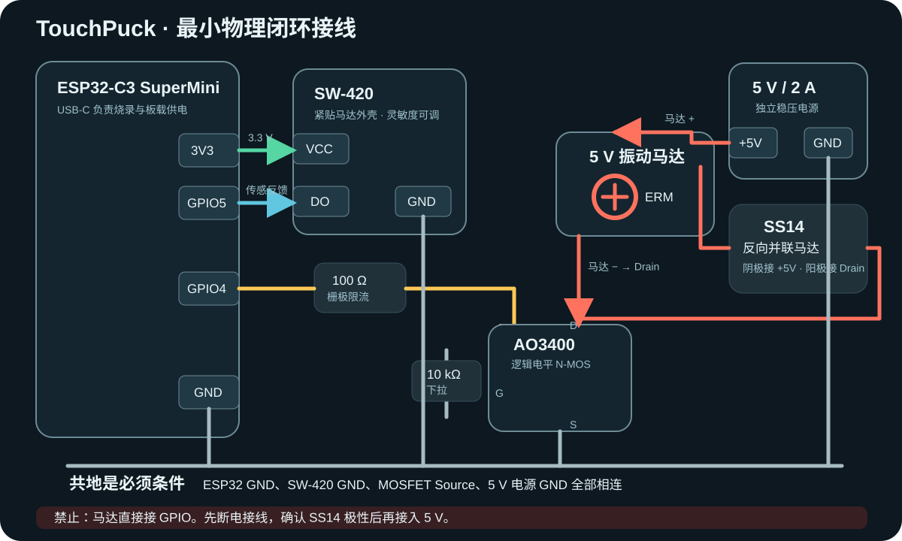

01 / 图像
02 / 触摸
等待手指按住画布滑动探索
背景静默主体弱振轮廓强脉冲
—网格坐标
0轮廓像素
0主体像素
03 / 输出
ESP32 未连接选择触觉执行器
安卓 Chrome 通过 navigator.vibrate() 输出节奏。强度是否可控取决于机型，因此本 Demo 用节奏区分触觉语义。
每个数据包携带序号、坐标、状态与 XOR 校验。接入可选振动传感器后，ESP32 只有检测到实际振动才回传“物理确认”。
尚未运行硬件验收
查看接线图与关键检查

马达使用独立 5 V 供电；ESP32 与电机电源必须共地；禁止 GPIO 直接驱动马达。
映射状态尚未触发
执行器反馈尚未检测
平均 RTT—
P95 RTT—
数据 / ACK0 / 0